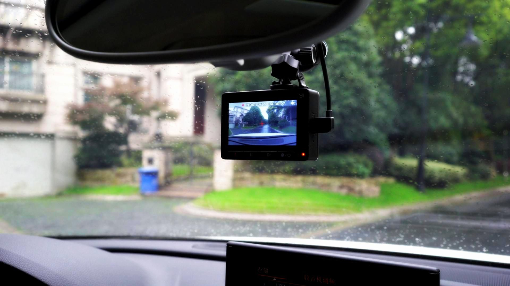

案例：模拟行车记录仪

1. 说明
- 存储空间不是特别大，一般128G算是很大的
- 循环录制
- 可通过网络将视频进行分享
2. 参考代码
import time
import numpy as np
import cv2
# 1. 获取每个视频的长度时间，单位为秒
video_time = int(input("请输入每个视频的长度（单位为秒）:"))
# 2. 准备工作
cap = cv2.VideoCapture(0) # 从摄像头中取得视频
# 获取视频播放界面长宽
width = int(cap.get(cv2.CAP_PROP_FRAME_WIDTH) + 0.5)
height = int(cap.get(cv2.CAP_PROP_FRAME_HEIGHT) + 0.5)
# 定义编码器 创建 VideoWriter 对象
fourcc = cv2.VideoWriter_fourcc(*'mp4v')
# 3. 记录开始时间
last_start_time = time.time()
# 4. 刚开始的时候就需要有一个默认输出的地方
out = cv2.VideoWriter('output-' + str(int(time.time())) + '.mp4', fourcc, 20.0, (width, height))
# 4. 开始录制
while(cap.isOpened() and ((cv2.waitKey(1) & 0xFF) != ord('q'))):
# 判断是否需要分割视频文件
if time.time()-last_start_time >= video_time:
# 如果一个视频的长度超时，那么就存储关闭这个文件，重建建立一个
# 关闭上一个文件
out.release()
# 新建一个
out = cv2.VideoWriter('output-' + str(int(time.time())) + '.mp4', fourcc, 20.0, (width, height))
# 重新计时
last_start_time = time.time()
# 读取帧摄像头
ret, frame = cap.read()
if ret == True:
#输出当前帧
out.write(frame)
cv2.imshow('My Camera',frame)
else:
break
# 释放资源
out.release()
cap.release()
cv2.destroyAllWindows()